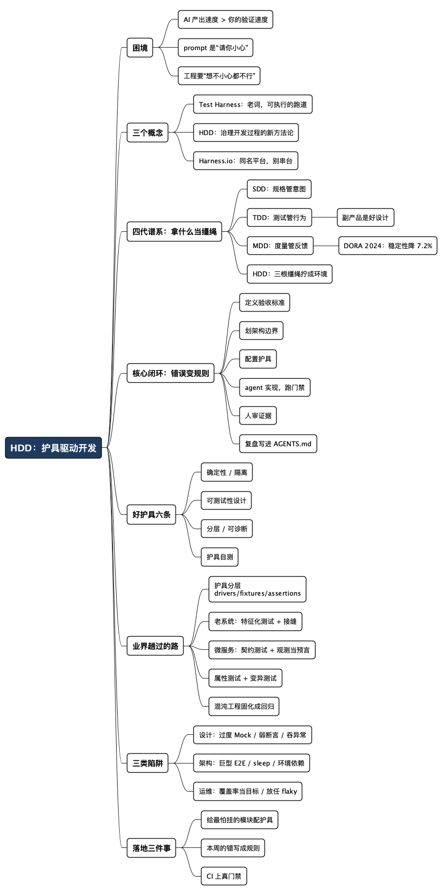

从 SDD、TDD、MDD 到 HDD：AI 编程的质量不靠 prompt，靠护具
Posted on 四 15 10月 2026 in Tech
| Abstract | 从 SDD、TDD、MDD 到 HDD：AI 编程的质量不靠 prompt，靠护具 |
|---|---|
| Authors | Walter Fan |
| Category | Tech |
| Version | v1.0 |
| Updated | 2026-10-15 |
| License | CC-BY-NC-ND 4.0 |
大纲
展开看看
- 困境：AI 的产出速度超过了你的验证速度，prompt 是“请你小心”，工程要的是“想不小心都不行”
- 护具三概念：Test Harness（老词）、HDD（新方法论）、Harness.io（同名平台，别串台）
- 四代谱系：SDD 规格管意图，TDD 测试管行为，MDD 度量管反馈，HDD 把三根缰绳拧成一套环境
- 核心机制：把 agent 犯的错变成环境的规则——带新人要写手册，不要靠口头提醒
- 好护具六条：确定性、隔离、可测试性设计、分层、可诊断、护具自测
- 业界趟过的路：护具分层、老系统的特征化测试与接缝、契约测试、属性测试配变异测试、混沌工程，附工具与论文
- 三类陷阱：设计（过度 Mock、弱断言、吞异常）、架构（巨型 E2E、sleep、环境依赖）、运维（覆盖率当目标、放任 flaky、护具债）
- 落地三件事：给最怕挂的模块配护具、把本周的错写成规则、给 CI 上真门禁
上个月我让 coding agent 给一个老服务加分页接口。半小时后它交上来四百多行：路由、service、单元测试，一应俱全，代码也称得上干净。问题是我盯着这四百行 diff 足足看了半小时才敢合——而这半小时的活，它几分钟就能再来一份。
这就是 AI 编程眼下最真实的处境：它的产出速度，超过了你的验证速度。提示词写得再漂亮也改变不了这个不等式，因为 prompt 的本质是“请你小心”，而工程需要的是“你想不小心都不行”。
把“请你小心”变成“想不小心都不行”的那套东西，行业里有个老词：harness。测试界用了几十年，常译作测试夹具、测试支架——本文按它实际干的活，叫它护具。最近它被翻出来升级成一套专门对付 AI 编程的方法论：HDD，Harness-Driven Development，护具驱动开发。
- 这篇顺着 SDD → TDD → MDD → HDD 这条线，讲清楚方法论怎么一步步走到今天
- 重点是 HDD 那条别人没有的闭环：让 agent 每犯一次错，环境就长出一条新规则
一、harness 是个老词，HDD 是个新用法
Test Harness 是测试领域的老概念，标准译法是测试夹具、测试支架。ISTQB 词典给的定义大意是：驱动被测系统、准备环境、注入数据、执行断言、收集结果所需的一整套程序、桩和测试数据。它和 test framework（测试框架）的区别一句话说清：framework 给你结构和 API，harness 给你一条完整可执行的跑道。
生活里的类比是教练车。学员踩油门你管不着，但副驾驶有副刹车，场地里有限速桩。护具干的就是这个——不是让被测对象变聪明，是让它闯的祸都落在可控范围内。
三个名词别搞混：
- Test Harness：老词，指那套测试基础设施
- Harness-Driven Development：新方法论，把 harness 从“测试工具”升级成“治理整个开发过程的环境”，下文展开
- Harness.io：一家同名的商业 CI/CD 平台，跟方法论没有关系，搜资料时注意别串台
至于 harness engineering 这两年的走红，OpenAI 那篇讲 Codex 团队五个月生成百万行代码的博文功不可没。我三月写过一篇《从 Prompt Engineering 到 Harness Engineering》，聊的是“人和 AI 怎么打交道”这条线。今天讲另一条线：方法论这条线——从 SDD、TDD、MDD 一路到 HDD。
二、四代方法论：拿什么管住写代码的手
所有开发方法论，骨子里都在回答同一个问题：拿什么当缰绳，管住写代码这双手？不同时代，答案不一样。
TDD：拿测试当缰绳。Kent Beck 那套打法：先写一个失败的测试，再写实现让它变绿，然后重构。测试从“事后质检”变成“事前驱动”。但 TDD 最大的副产品其实不是测试覆盖率，而是好设计——为了能测，代码被迫低耦合、依赖注入、接口清晰。测不着，多半是设计烂。这个洞见后面还要用到。
SDD：拿规格当缰绳。先把“要什么”写成规格，再动手实现。这思想一点不新，航天和工控领域拿形式化规格当合同用了几十年；新的是 AI 让它翻红：agent 需要一份机器可读、可验收的合同（spec-kit、OpenSpec 干的就是这个活）。规格防的是意图跑偏——AI 最擅长的，就是把错误的事做得漂漂亮亮。
MDD：拿度量当缰绳。这三个字母我熟，我写过一本书就叫《微服务之道：度量驱动开发》。核心一句话：度量不是年终的报表，是开车时的仪表盘——先定指标再干活，用数据验证假设，而不是用感觉汇报进展。AI 时代这一环反而更重要：DORA 2024 报告里，AI 采用率每提高 25%，交付稳定性反而下降 7.2%。写得更快和交付更稳是两回事，没有仪表盘，你连“变糟了”都不知道。
HDD：把三根缰绳拧成一套环境。SDD 管意图（动手之前），TDD 管行为（编码之时），MDD 管反馈（上线之后）。HDD 说：别分家了，全装进一个可执行的护具——规格变成规则，测试变成门禁，度量变成仪表盘——然后让 agent 在里面跑。
| 方法论 | 拿什么驱动 | 管哪个阶段 | AI 时代的角色 |
|---|---|---|---|
| SDD | 规格 | 动手之前 | 人和 agent 之间的合同 |
| TDD | 测试 | 编码之时 | agent 的红绿灯 |
| MDD | 度量 | 上线之后 | 护具的仪表盘 |
| HDD | 整套环境 | 全流程 | 前三样的容器，外加进化机制 |
TDD 和 HDD 的分别值得单独说一句：TDD 用测试驱动“代码的实现”；HDD 用环境驱动“开发的过程”。测试只是护具里的一件，护具里还有项目规则、架构约束、权限控制、CI 门禁、可观测性，以及最重要的一件：把错误变成规则的机制。
方法论这几十年其实在干同一件事：把“人的自觉”，变成“环境的约束”。 TDD 把纪律写成测试，CI 把纪律写成流水线，HDD 把纪律写成 agent 的运行环境。
三、核心机制：把 agent 犯的错，变成环境的规则
HDD 的工作循环展开是这么几步：
- 定义需求和验收标准——SDD 的活
- 划定架构边界：能改哪些模块、能引哪些依赖
- 配置护具：测试、Linter、CI 门禁、项目规则文件
- 让 agent 实现
- 跑护具：测试、检查、扫描
- 人看证据，决定合还是打回
- 把反复出现的失败，写成新的规则或检查——回到第 1 步
前三步都不新鲜，第七步才是 HDD 的灵魂。举个例子。
让 agent 给列表接口加分页，它交的活里 limit 参数没设上限——一个 ?limit=100000 就能把库拖垮。护具里一条表驱动测试把这事挡住了。光挡住不够，复盘之后往项目的 AGENTS.md 里加一条规则：
- 所有接受 page/size/limit 的查询参数，必须校验上限（默认 200），
超限返回 400 并带明确错误信息；上限值集中在 config 里定义，
不许在业务代码里写死。
@pytest.mark.parametrize("bad_limit", [100000, 10**9])
def test_list_rejects_oversized_limit(client, bad_limit):
resp = client.get(f"/items?limit={bad_limit}")
assert resp.status_code == 400
这条规则一落地，下次 agent 写任何分页接口，先读到规则，测试又守着——同样的错，不会再犯第二次。带过新人的都懂这个道理：好师父不是每次都口头提醒，是把提醒写进新人手册。口头提醒会随着聊天记录沉底，写进手册的会变成组织记忆。护具就是团队教训的制度化，是肌肉记忆的外置。
而且这套记忆是复利的。规则越攒越多，agent 的自由度看起来越来越小——但那是在错误方向上的自由度。约束缩小了解空间，反而让它把 token 花在正事上，跟下棋一个道理：规则越清楚，棋手越能专心想战术。
MDD 在这个循环里也没闲着。规则增长率、门禁拦截率、flaky 测试率、同一类错误的复发次数——这些度量是护具的仪表盘，告诉你该往哪儿加规则、哪条规则没起作用。仪表盘红了的护具，才是活的护具。
说句实在话：HDD 目前还不是标准化术语，不同组织的定义差得挺远，短期内也别指望出现“HDD 认证”。值钱的是那条“错误→规则”的闭环，不是名字。
四、好护具的六条共性
护具的搭建手艺，测试界攒了几十年经验。好护具的共性就六条：
- 确定性：控制住时间、随机数、网络这些不定因素，每次跑结果都一样；少用 sleep，用条件等待
- 隔离：测试之间不共享状态，外部依赖用 stub、fake 挡住；执行顺序怎么乱，结果都不变
- 可测试性设计：依赖注入、接口清晰，把逻辑从框架代码里搬出来（Meszaros 说的 Humble Object 模式）。这条从 TDD 传下来，在 HDD 里更硬——agent 写的代码要是测不着，门禁直接就红
- 分层：测试金字塔，大量快的单测、适量的集成测试、少量的端到端；微服务再加契约测试
- 可诊断：失败信息自带“哪儿错、期望什么、实际是什么”，别让人猜，更别让 agent 猜
- 护具自测：偶尔故意埋个 bug，确认测试真会红。挡不住错的测试，比没有测试更危险——它给人虚假的安心
五、业界已经趟过的路
六条共性是原则，下面是别人已经验证过的具体做法。按你现在的处境挑。
-
护具要分层，别堆成一坨。成熟的护具会把测试意图、执行逻辑、系统交互、数据、报告分开：
runner/（调度）、fixtures/（环境）、drivers/（API/UI/CLI 驱动）、stubs/（依赖替身）、test-data/、assertions/、reporters/。配套的套路是 Page Object 封装界面交互、Workflow Object 表达业务动作（写create_order()而不是一串点击）、Builder 或 Object Mother 造可读的测试数据。分层的好处在 AI 场景下被放大：agent 改一个驱动不会波及一百条用例的意图描述。 -
老系统别想着先补单测，先写特征化测试。Michael Feathers 在《Working Effectively with Legacy Code》里给的路子最实用：先用 Characterization Test 把当前行为原样钉住（哪怕当前行为是个 bug），再在数据库、文件、时间、外部 API 这些硬编码依赖周围凿“接缝”（seam），插进接口或依赖注入，才有隔离可言。顺序反了就会卡死——没有接缝，测试写不动；没有特征化测试，重构不敢动。让 agent 改老代码尤其要这样：先有网，再动刀。
-
微服务别靠全量联调。每个分支起隔离环境、数据自动灌自动清、依赖不可用时上服务虚拟化、每次事务带关联 ID。关键一条是把可观测性当测试预言：断言不只看 HTTP 响应，还要验日志、指标、事件、最终状态——该发的事件发了没、下游是不是只被调了一次。服务间契约用 Pact 这类消费者驱动契约测试独立验证，别等全系统部署完才发现接口对不上。
-
有效性要打组合拳：属性测试找反例，变异测试量有效性。Hypothesis 负责生成你想不到的输入并自动缩小反例；mutmut、cosmic-ray（Java 用 PIT）负责往代码里注入小变异，看测试会不会红。这两样加起来，比覆盖率百分比可信得多——对 AI 写的测试尤其对症，因为 AI 最擅长写“调用到了但断言空洞”的用例。
-
把混沌工程纳入护具。定义可靠性假设和 SLO、跑基线、注入受控故障、观测技术与用户两侧信号、触到安全阈值自动停止或回滚，最后把事故结果固化成回归用例。这和 HDD 那条“错误变规则”的闭环是同一个动作，只不过错误来自生产而不是 agent。
-
最后一条最容易被忽略：护具自己也要被审。2026 年 5 月的 QuartetFuzz 把这件事做实了——他们给 LLM 生成的 fuzz harness 定了四条正确性原则（逻辑正确、API 协议合规、安全边界、入口充分），开跑之前先用 generate-check-fix 循环审护具本身。两个数字：光 P1/P2 两条检查就拦下 58 个由护具自身缺陷造成的假崩溃；拿同一套标准审 70 个项目里 586 个已在生产跑的 harness，查出 53 处违规。论文摘要那句话值得抄在工位上——LLM 把护具生成规模化之后，失控的质量会把规模变成负债。
护具是生产级软件，不是“测试代码”：一样要 review、要 lint、要管依赖和版本，还要定期还债。衡量它健康不健康，看四个数：flaky 率、执行时长、失败修复时长、过期测试占比。
六、常见陷阱：设计、架构、运维三类
坏护具不是一天烂的。按出问题的层次分三类，对号入座：
设计类（写测试时就埋下的）
| 陷阱 | 代价 | 解法 |
|---|---|---|
| 测试实现细节而非行为 | 无害重构也会把测试打红，久而久之没人敢重构 | 只测可观察行为和公共接口 |
| 过度 Mock | 测试全绿，真实集成全崩 | 只 mock 外部边界；复杂行为用内存版 fake 更稳 |
| 共享可变状态 | 结果依赖执行顺序，单跑绿、全量红 | 每个测试独立数据，用例后重置夹具 |
| 弱断言 | 只查 HTTP 200 或“没抛异常”，跑过不等于对了 | 断言输出、状态变化和错误分支 |
| 吞掉异常 | 护具 catch 完不report，假通过最致命 | 快速失败，保留完整诊断信息 |
架构类（结构选错了）
| 陷阱 | 代价 | 解法 |
|---|---|---|
| 一个巨型端到端套件 | 跑得慢、挂了查不出哪错 | 按测试金字塔重新分配，下沉到单测和契约测试 |
| 脆弱的定时假设 | 到处 sleep(2)，机器一慢就红 |
条件等待、轮询超时、虚拟时钟 |
| 环境与数据依赖 | 换台机器、换个日期、换个端口就挂 | 显式控制输入，环境可重现（Testcontainers 这类） |
| 直接测私有方法 | 测试和实现焊死，改名就红 | 通过公共行为测 |
运维类（长期不管攒出来的）
| 陷阱 | 代价 | 解法 |
|---|---|---|
| 把覆盖率当目标 | 制造虚假信心，为数字写空断言 | 看缺陷拦截率和变异测试得分，覆盖率只看趋势 |
| 放任 flaky | 团队不再信任测试结果，红了先 retry | 当缺陷管：标记、隔离、限期修，到期就删 |
| 死修低价值测试 | 精力耗在几乎不提供保护的用例上 | 果断删掉，省下的时间补关键路径 |
| 护具不当生产代码 | 不 review、不 lint、依赖烂掉，成第二份技术债 | 和生产代码同一套工程标准 |
| 推迟护具维护 | 债务按复利涨，最后工程速度被拖垮 | 定期排容量重构和升依赖，把护具债当交付风险看 |
flaky 这条值得多说一句：它不是“运气问题”。Luo 等人在 An Empirical Analysis of Flaky Tests（FSE 2014）里把根因做了实证分类，排在最前面的就是异步等待、并发、测试顺序依赖——正好对应前面那三条原则（确定性、隔离、可诊断）。知道根因在哪，就不会满足于“重跑一次就绿了”。
总结：质量不是审出来的，是约束出来的
回到开头那个不等式：AI 的产出速度超过了你的验证速度。解法从来不是把 review 练得更快——那条路有生理上限。解法是把验证前置、自动化、制度化：让环境替你把关，让人只处理环境处理不了的判断。
明天就能动手的三件事：
- 挑一个最关键、最不敢挂的模块，给它配一套能挡住回归的测试护具——从一条测试开始也行，别从覆盖率指标开始
- 把这星期 agent 犯的每个错，写成一条项目规则或一条测试。教训要进环境，别进聊天记录
- 给 CI 加一道真门禁：测试不过，不许合。门禁第一次放水，就是护具失效的开始
教练车的逻辑很朴素：副刹车装好，你才敢让学员上路。护具穿齐了，你才敢让 agent 上场。
参考资料
方法论出处
- Urvanov — Harness-Driven Development：HDD 这个说法目前最完整的一份阐述，本文的闭环步骤出自这里
- OpenAI — Harness Engineering: Leveraging Codex in an Agent-First World：Codex 团队五个月百万行代码的工程做法，harness 一词在 AI 圈走红的起点
- ISTQB Glossary — Test Harness：术语对齐，省得和同事鸡同鸭讲
经典著作
- Gerard Meszaros — xUnit Test Patterns：Test Double（stub/mock/fake/dummy）、Humble Object、护具架构的源头，讲可测试性设计最透的一本
- Michael Feathers — Working Effectively with Legacy Code：“接缝”和特征化测试的出处，老系统上护具的唯一靠谱路径
- Martin Fowler — TestPyramid 与 GivenWhenThen：分层测试和场景句式
标准与指南
- Microsoft Azure Well-Architected — Testing 设计指南：云上测试策略最系统的公开指南，确定性、隔离、分层都有具体条款
- NASA 软件工程手册 — 测试规程：高可靠性领域怎么写测试规程，要求严到另一个量级
- CMU SEI — Common System and Software Testing Pitfalls：按类别整理的测试陷阱清单，适合当 review checklist
- DORA — Accelerate State of DevOps：本文那个“AI 采用率升、交付稳定性降 7.2%”出自 2024 年报
论文
- Quality-Assured Fuzz Harness Generation via the Four Principles Framework（arXiv:2605.21824, 2026）：LLM 生成的护具也得先过四条正确性检查；P1/P2 拦下 58 个假崩溃，审 586 个生产 harness 查出 53 处违规
- An Empirical Analysis of Flaky Tests（Luo 等，FSE 2014）：flaky 根因实证分类——异步等待、并发、测试顺序依赖，治 flaky 前先读这篇
- Automated data validation: an industrial experience report（JSS 2022）：把数据准备阶段的校验做成护具（RESTORE，开源 R 包），数据管道同类问题可直接借鉴
工具
- 规格：OpenSpec、spec-kit
- 测试与隔离：Hypothesis、Pact、Testcontainers、Schemathesis
- 有效性：mutmut、cosmic-ray、PIT
- 约束与观测：import-linter、ArchUnit、Semgrep、OpenTelemetry
本站相关
- 从 Prompt Engineering 到 Harness Engineering：人机协作方式的四次进化，另一条轴
- 给 AI 编程套一条带护栏的流水线：这套东西怎么接进 pre-commit 和 CI，有可抄的 Makefile 和 workflow
全文思维导图
@startmindmap
<style>
mindmapDiagram {
node {
BackgroundColor #F8F9FA
RoundCorner 10
Padding 10
FontSize 13
}
:depth(0) {
BackgroundColor #1E3A5F
FontColor white
FontSize 18
FontStyle bold
}
:depth(1) {
FontSize 15
FontStyle bold
}
:depth(2) {
FontSize 13
}
}
</style>
* HDD：护具驱动开发
** 困境
*** AI 产出速度 > 你的验证速度
*** prompt 是“请你小心”
*** 工程要“想不小心都不行”
** 三个概念
*** Test Harness：老词，可执行的跑道
*** HDD：治理开发过程的新方法论
*** Harness.io：同名平台，别串台
** 四代谱系：拿什么当缰绳
*** SDD：规格管意图
*** TDD：测试管行为
**** 副产品是好设计
*** MDD：度量管反馈
**** DORA 2024：稳定性降 7.2%
*** HDD：三根缰绳拧成环境
** 核心闭环：错误变规则
*** 定义验收标准
*** 划架构边界
*** 配置护具
*** agent 实现，跑门禁
*** 人审证据
*** 复盘写进 AGENTS.md
** 好护具六条
*** 确定性 / 隔离
*** 可测试性设计
*** 分层 / 可诊断
*** 护具自测
** 业界趟过的路
*** 护具分层\ndrivers/fixtures/assertions
*** 老系统：特征化测试 + 接缝
*** 微服务：契约测试 + 观测当预言
*** 属性测试 + 变异测试
*** 混沌工程固化成回归
** 三类陷阱
*** 设计：过度 Mock / 弱断言 / 吞异常
*** 架构：巨型 E2E / sleep / 环境依赖
*** 运维：覆盖率当目标 / 放任 flaky
** 落地三件事
*** 给最怕挂的模块配护具
*** 本周的错写成规则
*** CI 上真门禁
@endmindmap

本作品采用知识共享署名-非商业性使用-禁止演绎 4.0 国际许可协议进行许可。 欢迎在我的个人网站 https://www.fanyamin.com 访问原文并评论。